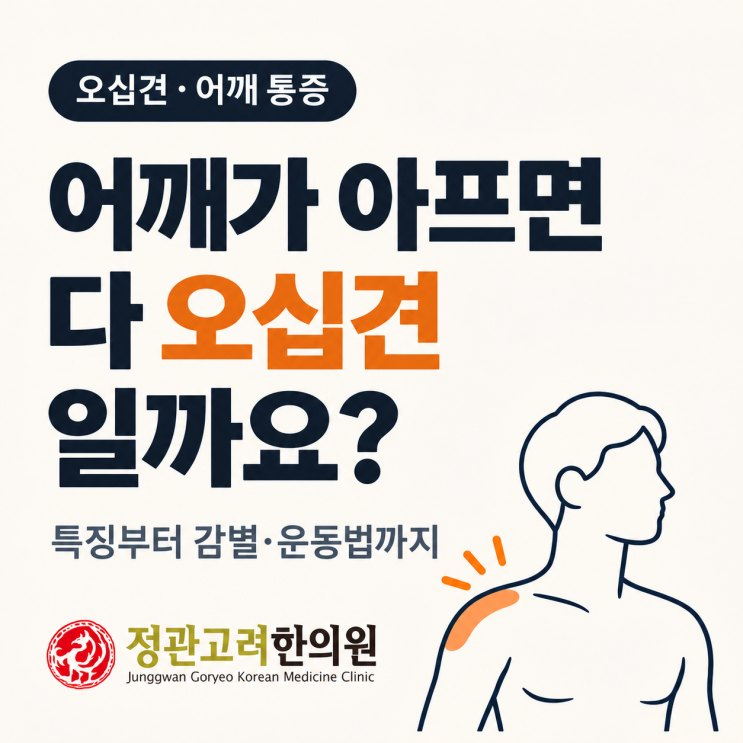
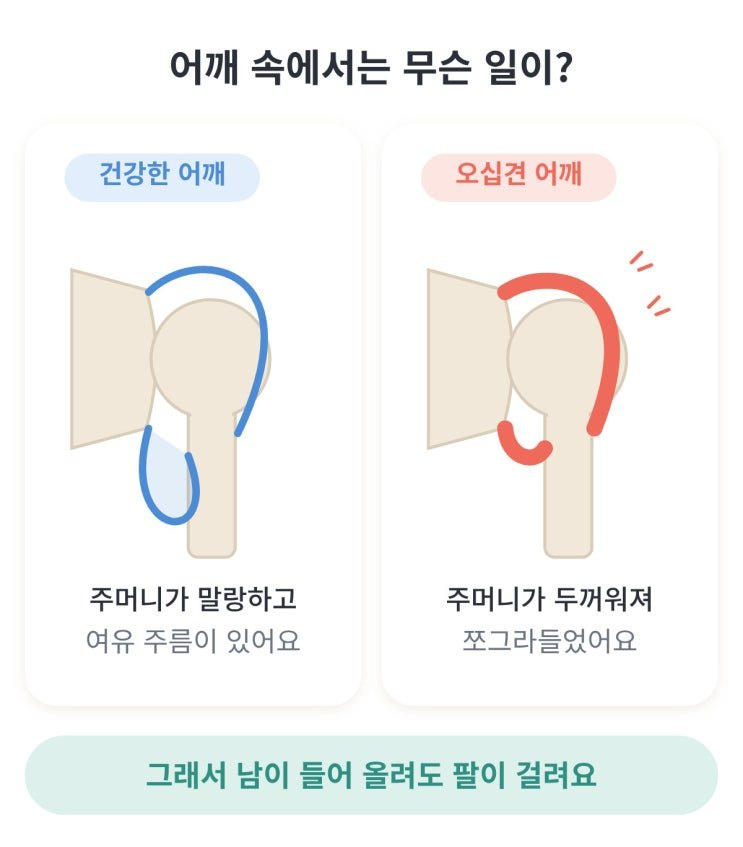
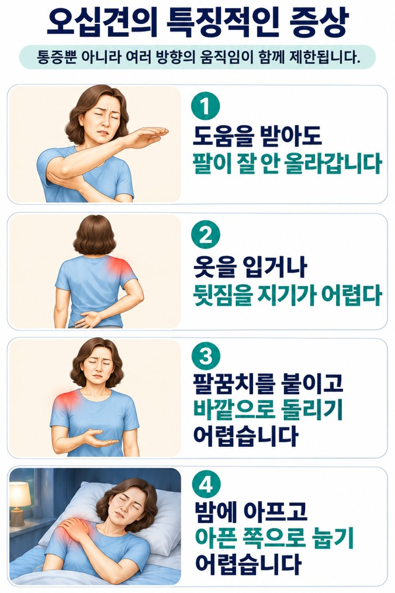
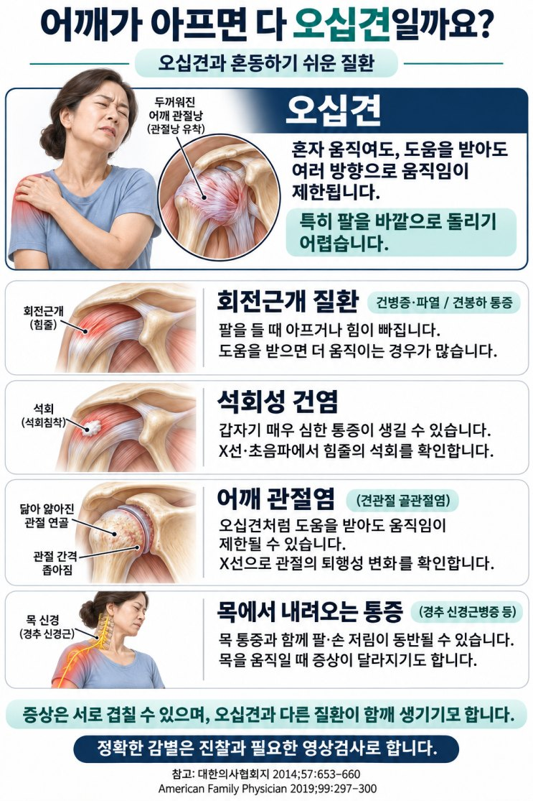
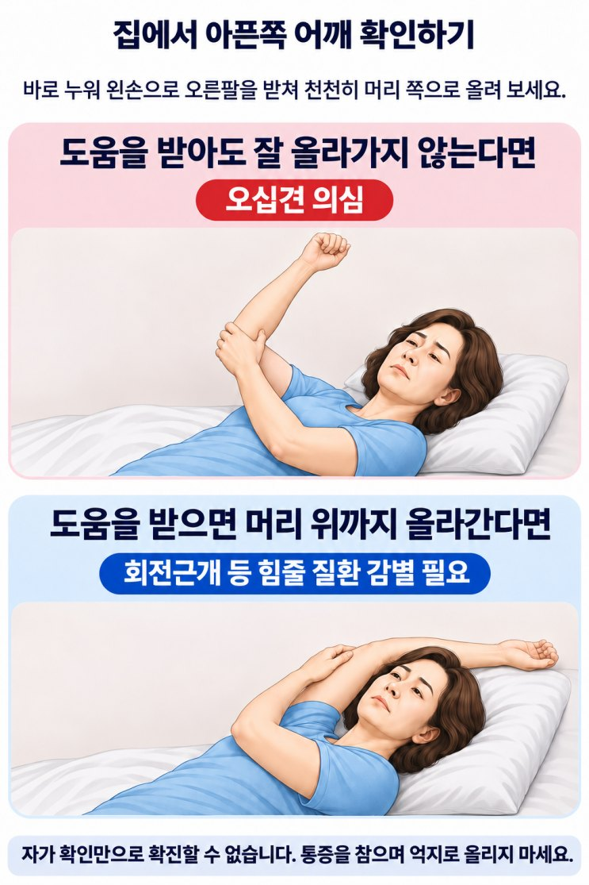
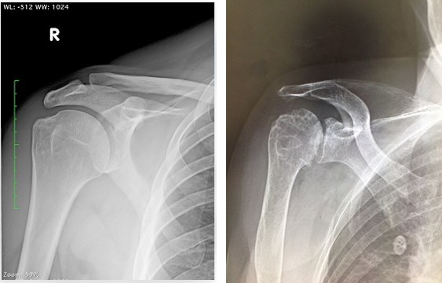
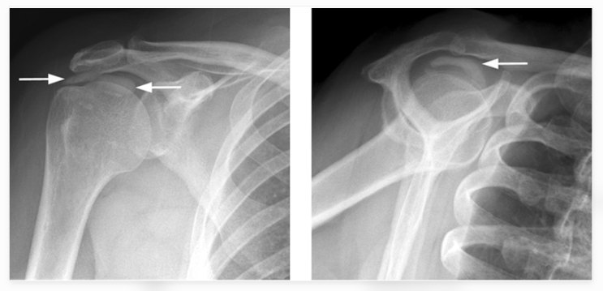
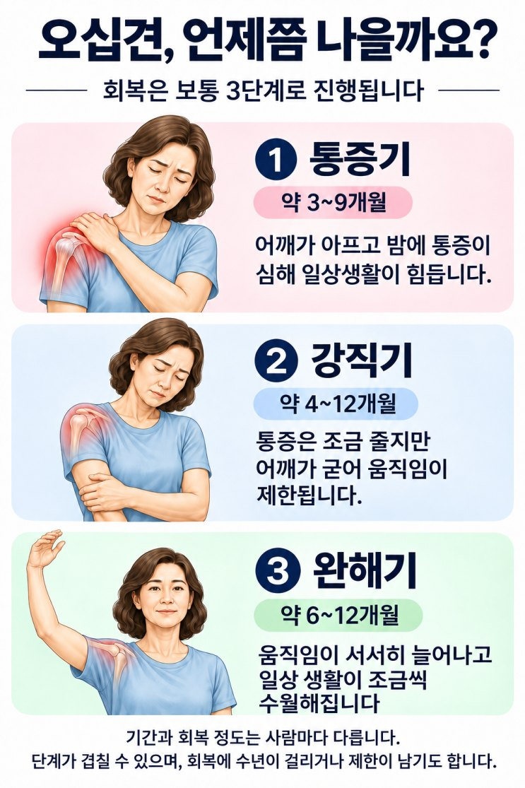
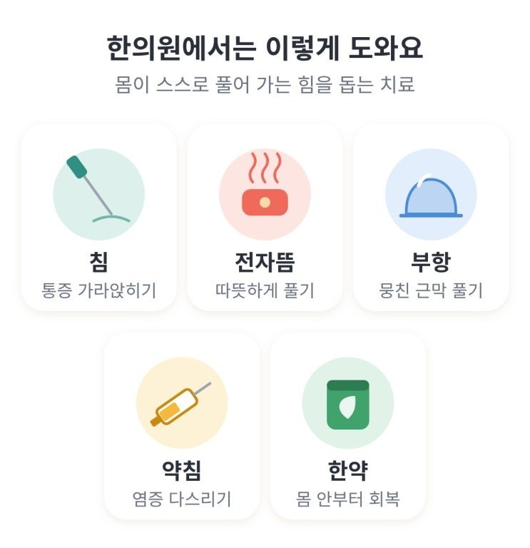
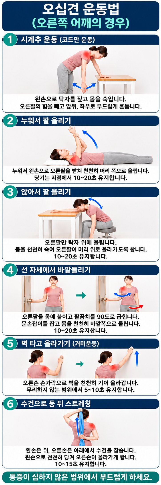

어깨가 아프면 다 오십견일까요? (오십견의 특징과 운동법)
이 글에서 알 수 있는 내용
- 오십견은 어떤 병이고, 어떤 증상이 특징일까요
- 오십견과 헷갈리기 쉬운 어깨 질환과 집에서 해 보는 자가감별법
- 오십견의 경과와 치료, 집에서 하는 운동 6가지

"원장님, 저 오십견이죠?"
진료를 하다 보면 어깨가 아파서 오시는 분들 중에 "오십견인 것 같아요" 하시는 분들이 많습니다.
하지만 실제로 체크해 보면 오십견이 아닌 경우도 많습니다.
어깨가 아프다고 다 오십견은 아닙니다.
힘줄에 문제가 생겨도, 석회가 쌓여도, 관절이 닳아도 비슷하게 아플 수 있습니다.
오십견은 굳은 관절을 풀어야 낫지만, 회전근개 손상 같은 힘줄 손상의 경우엔 억지로 운동하면 오히려 손상이 커질 수 있습니다.
그러므로, 이번에는 오십견의 특징과 감별해야 할 다른 질환에 대해 알아보고,
오십견의 예후와 치료법, 운동법 등에 대해 설명드리겠습니다.
오십견이란 어떤 병인가요?
오십견의 정식 명칭은 유착성 관절낭염입니다.
50대 전후의 나이에 별다른 이유 없이 또는 부상이나 수술 후 어깨를 오래 움직이지 못한 뒤 어깨 통증과 함께 어깨가 서서히 굳어져 움직이는 각도가 제한되는 병입니다.
어깨 관절은 관절낭이라는 얇은 주머니에 싸여 있는데, 이 주머니에 염증이 생기고 두꺼워지면서 쪼그라들게 됩니다. 그래서 어깨의 가동 범위가 점차 줄어드는 현상이 나타납니다.

- 어깨가 얼어붙은 것처럼 굳는다고 해서 서구에서는 '동결견(Frozen Shoulder)'이라고도 부릅니다.
- 우리나라에서는 50대 전후로 많이 발병한다고 '오십견'이라는 별명이 붙어있습니다.
- 한의학에서는 오십견을 견비통(肩臂痛)의 범주로 보고, 나이가 들며 기혈이 약해진 틈에 풍한습(風寒濕)의 나쁜 기운이 어깨에 머물러 굳는다고 보았습니다.
오십견은 왜 생길까요?
아직 오십견의 발병 원인은 정확히 밝혀진 바가 없습니다.
하지만, 발병 배경은 크게 두 가지로 설명할 수 있습니다.
- 뚜렷한 계기 없이 발생하는 경우다친 적이 없는데도 서서히 통증이 생기고 어깨가 굳어집니다.
- 부상·수술 후 발생하는 경우골절이나 어깨 손상, 수술 등으로 어깨를 오랫동안 움직이지 못한 뒤 생길 수 있습니다.
그리고 당뇨병과 갑상선 질환, 고지혈증은 발병 위험을 높이는 요인입니다.
어깨를 감싼 주머니가 염증으로 두꺼워지고 쪼그라들면서, 어깨의 가동 범위가 줄어드는 겁니다.
특별히 다치지 않아도 생길 수 있고, 당뇨가 있거나 다친 뒤 오래 움직이지 못했을 때 더 잘 생깁니다.
오십견의 특징적인 증상
오십견의 가장 큰 특징은 혼자 움직일 때뿐 아니라, 다른 사람이 도와줘도 어깨의 가동 범위가 줄어든다는 점입니다.
힘이 없어서가 아니라 관절 주머니 자체가 쪼그라들어 걸리기 때문입니다.
특히 팔꿈치를 몸에 붙이고 팔을 바깥으로 돌리는 동작이 제한되는 경우가 많습니다.
(다만 어깨 관절염이나 심한 통증 때문에도 움직임이 제한될 수 있으므로, 이 특징만으로 오십견을 확진하지는 않습니다.)

※ 이 중 4번 야간 통증은 회전근개 질환(어깨 힘줄 손상)에서도 나타나니 주의해야 합니다.
오십견과 혼동하기 쉬운 어깨 질환
어깨 통증은 오십견 뿐 아니라 여러 질환에서 나타나고, 원인에 따라 치료와 운동 방법이 달라집니다.
그러므로, 나이가 오십 전후이거나 밤에 아프다는 이유만으로 오십견이라고 판단해서는 안되고 정확한 감별 진단이 필요합니다.

[타 질환이 오십견과 비슷한 점]
- 회전근개 질환(어깨 힘줄 손상)도 팔을 들 때 아프고 야간통이 생깁니다. 파열이 있으면 근력 저하가 동반될 수 있습니다.
- 석회성 건염은 갑자기 극심한 통증이 생겨 팔을 거의 못 움직이기도 합니다.
- 어깨 골관절염도 오십견처럼 남이 도와줘도 움직임이 제한될 수 있습니다.
- 목에서 내려오는 통증(목디스크 등)도 어깨가 아픈 것으로 느껴질 수 있습니다.
[타 질환이 오십견과 다른 점]
- 회전근개 질환(어깨 힘줄 손상)은 혼자서는 팔을 못 들지만 남이 도와주면 올라가는데, 이는 관절보다는 팔을 들어 올리는 힘줄의 문제이기 때문입니다.
(다만 통증이 심하거나 오십견이 함께 생기면, 도움을 받아도 움직임이 제한될 수 있습니다.)
오십견과 회전근개 질환을 감별하는데 참고할 만한 방법은 아래 그림과 같습니다.
(단, 통증을 참으며 억지로 올리지는 마세요)

- 석회성 건염, 어깨 골관절염은 엑스레이로도 오십견과 구별할 수 있습니다.
오십견은 관절낭의 문제이기 때문에 엑스레이에서는 뚜렷한 이상이 보이지 않는 경우가 많습니다.
- 하지만, 똑같이 어깨가 굳는 어깨 골관절염의 경우엔 아래의 오른쪽 사진처럼 퇴행성 변화(관절 간격 좁아짐, 모서리 지저분함)가 나타납니다.

- 석회성 건염도 엑스레이 상 비교적 쉽게 관찰할 수 있습니다.

정리하면 다음과 같습니다.
| 질환 | 대표적인 X선 소견 |
|---|---|
| 오십견 | 대체로 관절 간격과 뼈 모양이 보존됨 |
| 어깨 골관절염 | 관절 간격 감소, 골극 |
| 석회성 건염 | 힘줄 부위의 하얀 석회 침착 |
어깨가 아프다고 다 오십견은 아닙니다.
힘줄에 문제가 생겨도, 석회가 쌓여도, 관절이 닳아도 비슷하게 아플 수 있습니다.
오십견인 줄 알고 기다리거나 무리하게 운동하기 전에, 무엇 때문에 아픈지부터 확인해야 합니다.
오십견은 얼마나 오래 가나요?
오십견은 수개월에서 수년에 걸쳐 호전되는 경우가 많습니다.
흔히 통증기·강직기·완해기로 설명하지만, 단계가 서로 겹칠 수 있고 기간도 사람마다 다릅니다.
통증이 줄어든 뒤에도 움직임 제한이 남는 경우가 있습니다.

"오십견은 치료 안해도 기다리면 낫는다"는 말이 있던데요?
치료하지 않아도 호전될 수는 있습니다.
하지만 “그냥 두면 누구나 완전히 낫는다”고 말할 수는 없습니다.
오십견은 시간이 지나면서 통증이 줄고 움직임이 회복되는 경향이 있습니다.
다만 회복에 수년이 걸리거나, 통증은 줄었어도 팔 올리기·외회전·등 뒤로 손 보내기 등의 제한이 남을 수 있습니다.
2025년 국내 진료지침도 모든 환자가 완전한 자연 회복에 이르는 것은 아니라고 정리했습니다.
여기서 ‘통증이 없어지는 것’과 ‘어깨 기능이 회복되는 것’은 구별해야 합니다.
덜 아파졌다고 해도 어깨가 굳어 옷 입기나 머리 감기가 불편하다면 충분히 회복됐다고 보기는 어렵습니다.
치료와 재활의 목적은 기다리는 동안의 통증과 생활 불편을 줄이고, 움직임 회복을 돕기 위해서 입니다.
오십견의 치료는 어떻게 하나요?
오십견 치료는 통증을 줄이면서, 굳어진 어깨의 움직임을 조금씩 회복하는 것이 핵심입니다.
대부분 비수술적으로 치료하며, 통증과 강직 정도에 맞춰 강도를 조절합니다.
| 단계 | 치료의 중심 |
|---|---|
| 1. 통증기 | 통증 조절과 수면 확보, 편안한 범위의 가벼운 운동 |
| 2. 강직기 | 관절 가동 운동과 스트레칭으로 움직임 회복 |
| 3. 완해기 | 운동 범위를 점차 넓히고 근력·일상 기능 회복 |
한방에서는 침과 뜸, 약침, 부항, 물리치료, 한약 등을 통해 통증완화와 운동 회복을 돕습니다.

※ 저는 초기 '통증기'에 야간통이 극심해서 잠을 자기 힘든 경우에는, 양방 치료도 병행하도록 안내드립니다. 왜냐하면 수면의 질이 떨어지면 회복도 더디고, 삶의 질도 저하되기 때문입니다.
집에서 하는 오십견 운동 6가지
운동은 오십견 치료의 기본입니다.
하지만, 세게 한다고 좋은 것이 아닙니다.
통증을 참아가며 억지로 꺾기보다, 상태에 맞는 운동을 꾸준히 시행하는 것이 중요합니다.
그림에서 빨간 표시가 아픈 쪽 어깨입니다.

★ 운동할 때 주의할 점
- 샤워 직후나 온찜질 10~15분 뒤처럼 몸을 따뜻하게 한 다음에 하는 것이 좋습니다.
- 시원하게 당기는 느낌까지만 하고, 찌르는 통증이 오면 멈춥니다.
- 운동 후 통증이 오래 남거나 그날 밤·다음 날 더 아프면 강도와 횟수를 줄입니다.
- 한 번에 세게 하는 것보다 하루 2~3번 가볍게 하는 것이 좋습니다.
마치며
오십견은 시간이 지나면서 호전되는 경우가 많지만, 회복 속도와 회복 정도는 사람마다 다릅니다.
오래 불편을 겪지 않으려면 먼저 무엇 때문에 아픈지 정확히 확인하는 것이 중요합니다.
어깨가 아프다고 혼자 오십견으로 단정하지 마시고, 진찰과 필요한 검사를 받아보시기 바랍니다.
한의학박사 · 한방재활의학과 전문의 박장우
참고자료 · 영상 자료 출처
- 이호준. 흔히 발생하는 어깨통증의 감별진단. 대한의사협회지. 2014;57(8):653–660. — 오십견, 회전근개 질환, 석회성 건염 등의 감별진단. doi.org/10.5124/jkma.2014.57.8.653
- Lee BC, et al. Clinical Practice Guidelines for Diagnosis and Non-Surgical Treatment of Primary Frozen Shoulder. Annals of Rehabilitation Medicine. 2025;49(3):113–138. — 국내 일차성 동결견 진료지침. 진단, 자연경과, 운동 및 비수술적 치료. doi.org/10.5535/arm.250057
- Hand C, Clipsham K, Rees JL, Carr AJ. Long-term outcome of frozen shoulder. Journal of Shoulder and Elbow Surgery. 2008;17(2):231–236. — 오십견의 장기 경과와 잔존 증상. doi.org/10.1016/j.jse.2007.05.009
- Dyer BP, et al. Diabetes as a risk factor for the onset of frozen shoulder: a systematic review and meta-analysis. BMJ Open. 2023;13:e062377. — 당뇨병과 오십견 발병 위험의 연관성. doi.org/10.1136/bmjopen-2022-062377
- Dyer BP, et al. Diabetes as a Prognostic Factor in Frozen Shoulder: A Systematic Review. Archives of Rehabilitation Research and Clinical Translation. 2021;3(3):100141. — 당뇨병 유무에 따른 오십견의 통증·기능·가동범위 예후. doi.org/10.1016/j.arrct.2021.100141
- Qin Y, et al. Traditional Chinese medicine for frozen shoulder: An evidence-based guideline. Journal of Evidence-Based Medicine. 2023;16(2):246–258. — 중국에서 개발된 동결견 치료지침. 침치료 등 관련 치료의 효과와 근거 수준. doi.org/10.1111/jebm.12530
영상 자료 출처
- Asia Medical Specialists. Frozen Shoulder FAQs. Fig. 4: 정상 어깨와 어깨 관절염의 엑스레이 비교. asiamedicalspecialists.hk
- American Academy of Orthopaedic Surgeons. OrthoInfo: Calcific Tendinitis of the Shoulder. 석회성 건염 엑스레이 원출처: Suzuki K, Potts A, Anakwenze O, Singh A. Calcific Tendinitis of the Rotator Cuff: Management Options. Journal of the American Academy of Orthopaedic Surgeons. 2014;22(11):707–717. orthoinfo.org